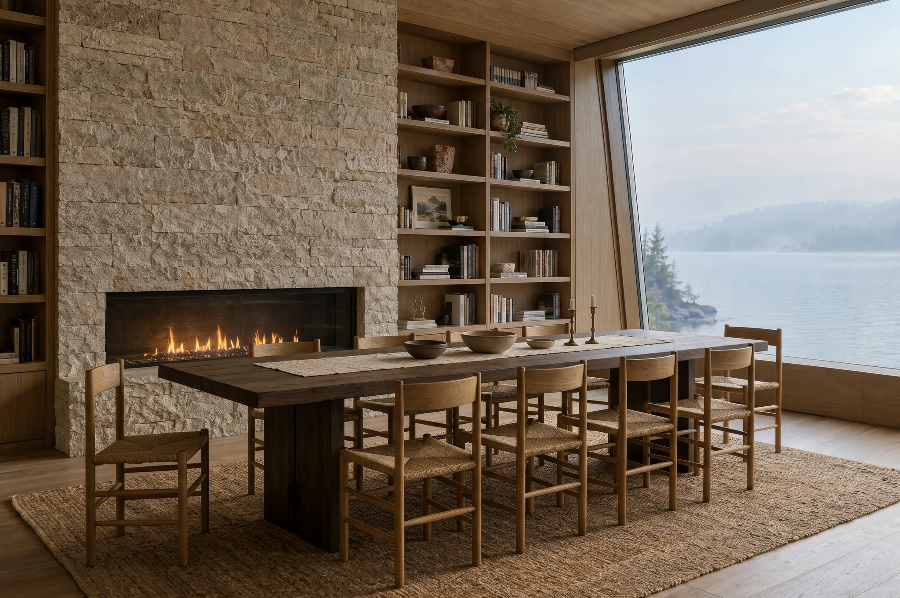

Клуб на пять семей
Соседей мало, и все знакомы. К вашему приезду дом прогрет и убран, консьерж на связи днём и ночью.
- Лист
- 06 из 07
- Вилл
- 5
- Причал
- 6 мест
Что даёт клуб владельцам
- 1
Причал и катер
У каждой виллы место на причале для своего катера. Клубный выйдет с капитаном по звонку.
- 2
Гостиная клуба
Камин, библиотека и длинный стол. Позовите друзей, ужин устроит консьерж.
- 3
Управляющая компания
Присматриваем за домом, пока вас нет. По желанию сдаём его в аренду и присылаем отчёты.
- 4
Сауна у воды
Кедровая сауна со спуском в озеро. Протопим к нужному часу, а зимой расчистим прорубь.
- 5
Тихая охрана
Пост на въезде и обход периметра круглые сутки. Камеры смотрят наружу, а не в ваш двор.